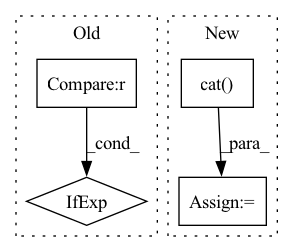

Pattern ID :6440

Before Change
if self.training and self.layer_dropout > 0:
to_drop = torch.empty(len(self.blocks)).uniform_(0, 1) < self.layer_dropout
blocks = [block for block, drop in zip(self.blocks, to_drop) if not drop]
blocks = self.blocks[:1] if len(blocks) == 0 else blocks
block_args = list(map(lambda x: {"f_args": x[0], "g_args": x[1]}, block_args))
return _ReversibleFunction.apply(x, blocks, block_args)
After Change
self.blocks = nn.ModuleList([ReversibleBlock(f=f, g=g) for f, g in blocks])
def forward(self, x, **kwargs):
x = torch.cat([x, x], dim=-1)
blocks = self.blocks
args = route_args(self.args_route, kwargs, len(blocks))
args = list(map(lambda x: {"f_args": x[0], "g_args": x[1]}, args))
layers_and_args = list(zip(blocks, args))
if self.training and self.layer_dropout > 0:
layers_and_args = layer_drop(layers_and_args, self.layer_dropout)
blocks, args = map(lambda ind: list(map(itemgetter(ind), layers_and_args)), (0, 1))
out = _ReversibleFunction.apply(x, blocks, args)
return torch.stack(out.chunk(2, dim=-1)).sum(dim=0)
In pattern: SUPERPATTERN
Frequency: 3
Non-data size: 4
Instances
Fragment ID: 22354487
Project Name: lucidrains/sinkhorn-transformer
Commit Name: d5b9c649e59290b15c15f85d0bb182cb20b699fb
Time: 2020-04-15
Author: lucidrains@gmail.com
File Name: sinkhorn_transformer/reversible.py
M Class Name: ReversibleSequence
N Class Name: ReversibleSequence
M Method Name: forward(2)
N Method Name: forward(2)
M Parent Class: nn.Module
N Parent Class: nn.Module
M File Name: sinkhorn_transformer/reversible.py
N File Name: sinkhorn_transformer/reversible.py
M Start Line: 133
M End Line: 142
N Start Line: 161
N End Line: 174
'>
Before Change
out.log_softmax(dim=-1).view(-1), k=beam, dim=-1
)
best_logp = (
logp_targets[0]
if positions[0] != blank_id
else logp_targets[1]
)
// Extend hyp by selection
for j in range(logp_targets.size(0)):
After Change
best_logp = logp_targets[0]
// concat blank_id
logp_targets = torch.cat((logp_targets, out.view(-1)[0:1]))
positions = torch.cat(
(
positions + 1,
torch.zeros(
'>
Fragment ID: 22354486
Project Name: speechbrain/speechbrain
Commit Name: 4f184ec4401d29785bf25a773f29facf0a108f82
Time: 2020-11-03
Author: ff936tw@gmail.com
File Name: speechbrain/decoders/transducer.py
M Class Name: AnonimousClass
N Class Name: AnonimousClass
M Method Name: transducer_beam_search_decode(11)
N Method Name: transducer_beam_search_decode(11)
M Parent Class:
N Parent Class:
M File Name: speechbrain/decoders/transducer.py
N File Name: speechbrain/decoders/transducer.py
M Start Line: 476
M End Line: 526
N Start Line: 449
N End Line: 534
'>
Before Change
text_emo_vecs_origin = self.textEmoEmbs(torch.LongTensor(list(range(self.num_classes))).to(self.device))
text_emo_vecs = text_emo_vecs_origin.unsqueeze(0).repeat(batch_size, 1, 1)
text_attn_weights = self.attention(output_text, text_emo_vecs)
logits = text_attn_weights if logits is None else logits + text_attn_weights
if "a" in self.modalities:
output_audio, _ = self.RNNs[1](X_audio)
After Change
// logits = visual_attn_weights if logits is None else logits + visual_attn_weights
scores.append(visual_attn_weights.unsqueeze(0))
scores = torch.cat(tuple(scores), dim=0).transpose(0, 2)
logits = self.modality_weights(scores)
logits = logits.squeeze().t()
// for i in range(len(self.modalities)):
// if i == 0:
// logits = scores[i] * self.modality_weights[i]
'>
Fragment ID: 22354493
Project Name: wenliangdai/modality-transferable-mer
Commit Name: eaf8a7cf6ec5b7ed6389b9d73cd6bb31fc1576c2
Time: 2020-06-10
Author: wenliang.dai.1995@gmail.com
File Name: src/models/temp.py
M Class Name: EmotionEmbAttnModel
N Class Name: EmotionEmbAttnModel
M Method Name: forward(4)
N Method Name: forward(4)
M Parent Class: nn.Module
N Parent Class: nn.Module
M File Name: src/models/temp.py
N File Name: src/models/temp.py
M Start Line: 71
M End Line: 94
N Start Line: 74
N End Line: 105